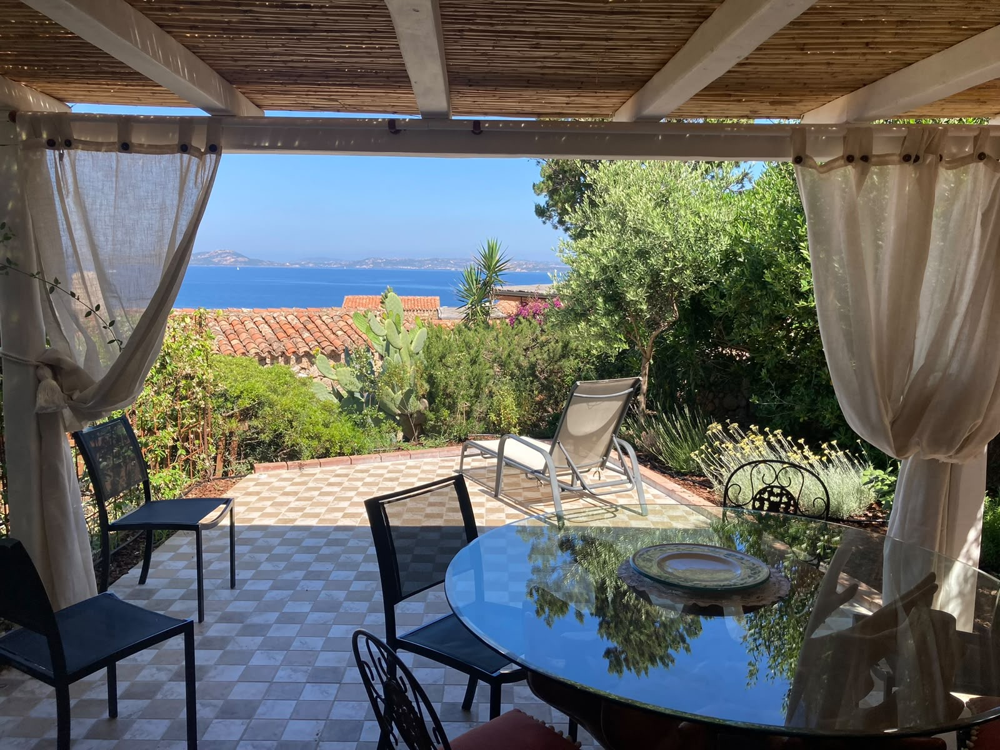
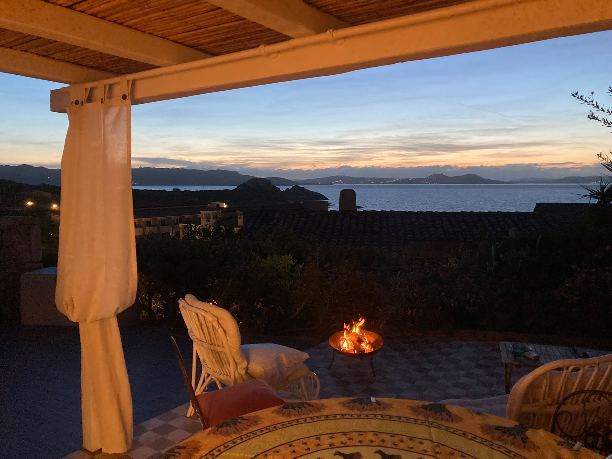
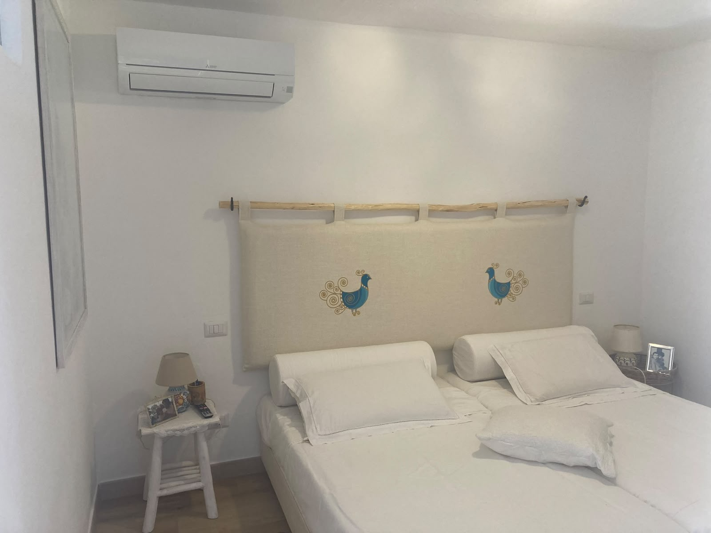
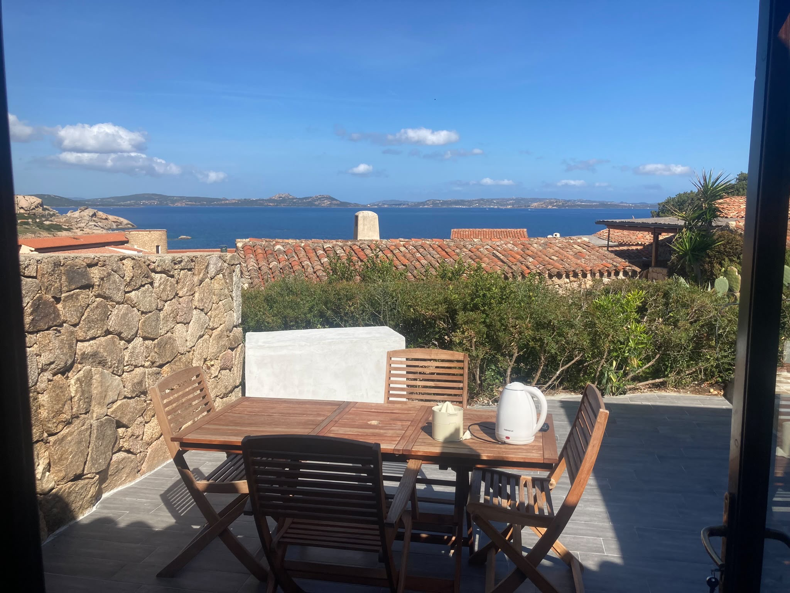
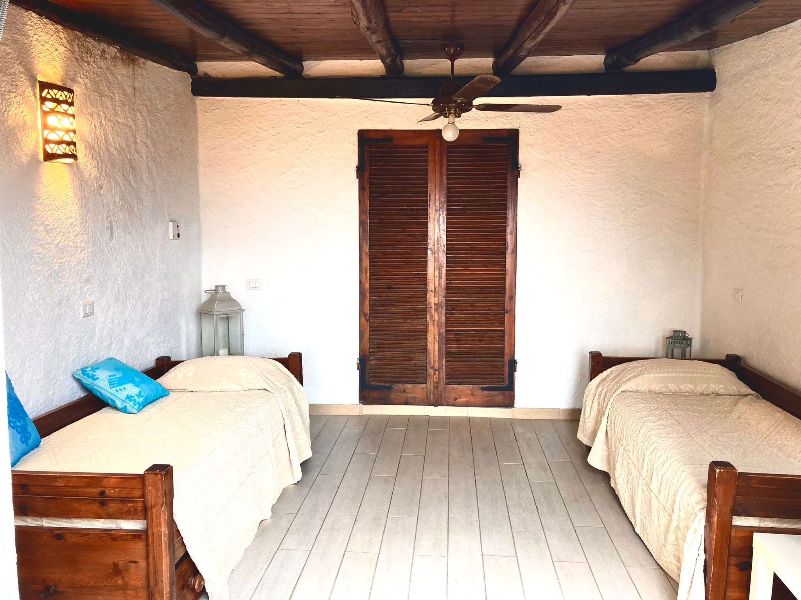
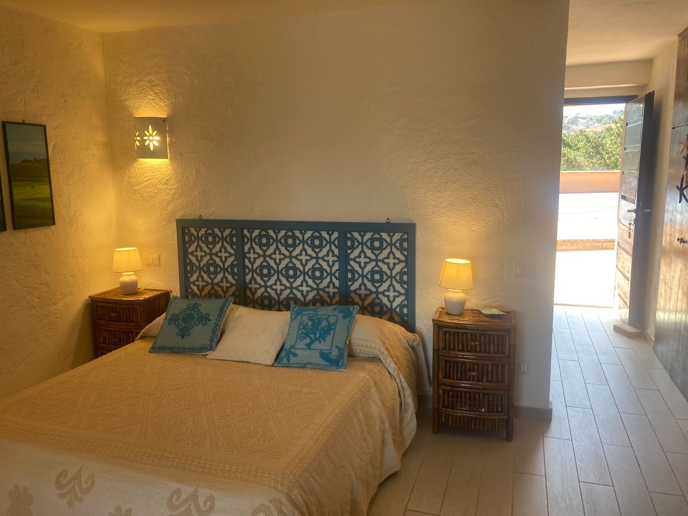

Ospitalità a terra
Due soluzioni uniche di circa 50 mq, entrambi localizzati all'interno del residence Belvedere, progettate per offrire il massimo comfort, ampi spazi esterni e una vista mare spettacolare, impreziosite dall'accesso alla piscina del residence.
Un delizioso bilocale di circa 50 mq situato a soli 50 metri dal mare. Il punto di forza assoluto è la straordinaria terrazza panoramica per ammirare i tramonti sul golfo di Arzachena.

Terrazza
Panorama
Piscina ResidenceL'appartamento è rifinito con cura, pensato per accogliere ospiti in cerca di relax e bellezza. Gode di una luminosa zona giorno, una camera da letto matrimoniale con letto King size e accesso immediato ai servizi e alle spiagge di Baja Sardinia.
Contattaci su WhatsApp per conoscere la disponibilità e le tariffe riservate ai nostri ospiti, senza commissioni di terze parti.
Richiedi info su WhatsAppUn appartamento spazioso, luminoso e accogliente di 50 mq, situato in una posizione eccezionale a due passi dalla spiaggia e dai ristoranti più rinomati del centro di Baja Sardinia.

Zona Living
Pergolato Esterno
Vista panoramicaLa struttura offre un comodo giardino privato e ampi pergolati all'aperto, ideali per pranzare all'aria aperta godendosi la brezza marina. La quiete del residence e la grande piscina completano un'offerta di altissimo livello.
Scrivici un messaggio per verificare le date libere e ricevere un'offerta dedicata per il vostro soggiorno.
Richiedi info su WhatsApp